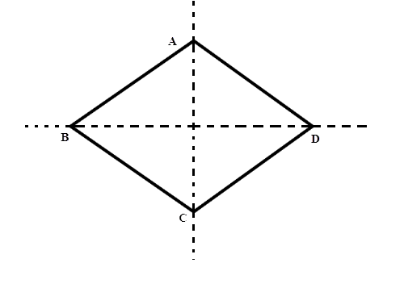
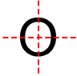

Question:1
Tick (✓) the correct answer
A scalene triangle has
(a) no line of symmetry
(b) one line of symmetry
(c) two lines of symmetry
(d) three lines of symmetry
Solution:
(a) no line of symmetry
Question:2
Tick (✓) the correct answer
A rectangle is symmetrical about
(a) each one of its sides
(b) each one of its diagonals
(c) a line joining the midpoints of its opposite sides
(d) none of these
Solution:
(c) a line joining the midpoints of its opposite sides
Question:3
Tick (✓) the correct answer
A square has
(a) one line of symmetry
(b) two lines of symmetry
(c) three lines of symmetry
(d) four lines of symmetry
Solution:
(d) four lines of symmetry
A square is symmetrical about both of its diagonals and both lines joining the midpoints of its opposite sides.
Question:4
Tick (✓) the correct answer
A rhombus is symmetrical about
(a) the line joining the midpoints of its opposite sides
(b) each of its diagonals
(c) perpendicular bisector of each of its sides
(d) none of these
Solution:
(b) each of its diagonal

Question:5
Tick (✓) the correct answer
A circle has
(a) no line of symmetry
(b) one line of symmetry
(c) two lines of symmetry
(d) an unlimited number of lines of symmetry
Solution:
(d) an unlimited number of lines of symmetry
A circle is symmetrical about all its diameters and a circle has unlimited number of diameters.
Therefore, a circle has unlimited number of lines of symmetry.
Question:6
Tick (✓) the correct answer
In ∆ABC, AB = AC and AD ⊥ BC, BE ⊥ AC and CF ⊥ AB. Then ∆ABC is symmetrical about
(a) AD
(b) BE
(c) CF
(d) none of these
Solution:
(a) AD
This triangle is symmetrical only about AD.
Any isosceles triangle is symmetrical about its one altitude, which is drawn from the vertex between the two equal sides to the unequal side of the triangle.
.png)
Question:7
Tick (✓) the correct answer
ABCD is a kite in which
AB =
AD and
BC =
DC. The kite is symmetrical about
.png)
(a) the diagonal
AC
(b) the diagonal
BD
(c) none of these
Solution:
(a) the diagonal AC
.png)
Since the part ABC is symmetrical to the part ADC, AC divides the figure into two equal parts.
Question:8
Tick (✓) the correct answer
The letter O of the English alphabet has
(a) no line of symmetry
(b) one line of symmetry
(c) two lines of symmetry
(d) none of these
Solution:
(c) two lines of symmetry
The letter O of the English alphabetic system is symmetrical about its horizontal and vertical line.

Question:9
Tick (✓) the correct answer
the letter Z of the English alphabet has
(a) no line of symmetry
(b) one line of symmetry
(c) two lines of symmetry
(d) none of these
Solution:
(a) no line of symmetry
Question:10
Tick (✓) the correct answer
Draw the line (or lines) of symmetry of each of the following figures.
.png)
Solution:
Lines of symmetry are shown by the dotted lines.
(i)

(ii)
(iii)
(iv)
Question:11
Tick (✓) the correct answer
Which of the following statements are true and which of them are false?
(i) A parallelogram has no line of symmetry.
(ii) An angle with equal arms has its bisector as the line of symmetry.
(iii) An equilateral triangle has three lines of symmetry.
(iv) A rhombus has four lines of symmetry.
(v) A square has four lines of symmetry.
(vi) A rectangle has two lines of symmetry.
(vii) Each one of the letters H, I, O, X of the English alphabet has two lines of symmetry.
Solution:
(i) True
(ii) True
(iii) True
.png)
(iv) False
A rhombus is symmetrical about both of its diagonals.
So, a rhombus has two lines of symmetry.
(v) True
A square is symmetrical about both of its diagonals and both the lines joining the midpoints of its opposite sides.
So, a square has four lines of symmetry.
(vi) True
A rectangle is symmetrical about both the lines joining the midpoints of its opposite sides.
So, a rectangle has two lines of symmetry.
(vii) True
Each one of the letters, H, I, O and X, of the English alphabetic system is symmetrical about its horizontal and vertical line, in the middle of the letters.
So, all these letters have two lines of symmetry.

Question:12
(i) How many lines of symmetry does an equilateral triangle have?
(ii) What is the order of rotational symmetry of an equilateral triangle?
Solution:
(i) An equilateral triangle has 3 lines of symmetry.
.png)
(ii) The number of positions a figure can be rotated to, without bringing in any changes to the way it looked originally, is called its order of rotational symmetry.
So, the order of rotational symmetry of an equilateral triangle is 3.
Question:13
Through what different angles should a rectangle be rotated to be in symmetrical position with the original position?
Solution:
If we rotate a rectangle by either 180° or 360°, it will look the same as it looked originally, i.e. it will be symmetrical.
Question:14
What is the order of rotational symmetry of a square? Give the angles of such rotations.
Solution:
If we rotate the square either by 90o, 180o, 270o or by 360o, the square looks exactly the same.
Therefore, the order of rotational symmetry of a square is 4.
Question:15
(i) How many lines of symmetry does a rhombus have?
(ii) What is the order of rotational symmetry of a rhombus?
Solution:
(i) A rhombus has 2 lines of symmetry.
(1).png)
(ii) When we rotate the rhombus either by 180° or by 360°, it looks the same.
Therefore, the rotational symmetry of a rhombus is 2.
Question:16
Write three letters of the English alphabet which have two lines of symmetry and rotational symmetry of order 2.
Solution:
H, O and X are the three letters that have 2 lines of symmetry and their order of rotational symmetry is 2.
.png)
Question:17
Give an example of a figure that has a line of symmetry but does not have rotational symmetry.
Solution:
The line of symmetry of an isosceles triangle is the angle bisector of its vertical angle, which is in-between the equal sides. However, it does not have any rotational symmetry.
Question:18
Does every trapezium have a line of symmetry?
Solution:
No, every trapezium does not have a line of symmetry.
Only an isosceles trapezium has a line of symmetry.
Question:19
What is the line of symmetry of a semicircle?
Does it have rotational symmetry?
Solution:
The perpendicular bisector of the diameter of a circle is its line of symmetry.
No, a semicircle does not have any rotational symmetry as it fits itself only once during a complete rotation.
.png)
Question:20
Give an example of a geometrical figure which has neither a line of symmetry nor a rotational symmetry.
Solution:
A scalene triangle neither has a line of symmetry nor a rotational symmetry.
Question:21
Find
(i) the number of lines of symmetry and
(ii) the order of rotational symmetry of the adjoining figure.
Draw the line of symmetry.
.png)
Solution:
(i) The line of symmetry of the given figure is 1.
(ii) The order of rotational symmetry of the given figure is 0.
Question:22
(i) How many lines of symmetry does the given figure have? Draw these lines.
(ii) What is the order of rotational symmetry of the given figure?
.png)
Solution:
(i) The given figure has 2 lines of symmetry.
(ii) The order of rotational symmetry of the given figure is 2.
.png)
Question:23
Give an example of a letter of the English alphabet which has (i) no line of symmetry and (ii) rotational symmetry of order 2.
Solution:
The example of a letter of the English alphabetic system which has (i) no line of symmetry and (ii) rotational symmetry of order 2 is N.